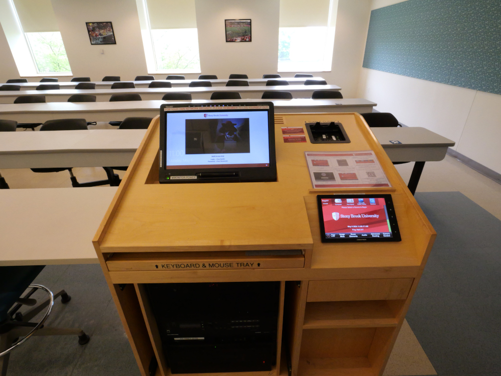
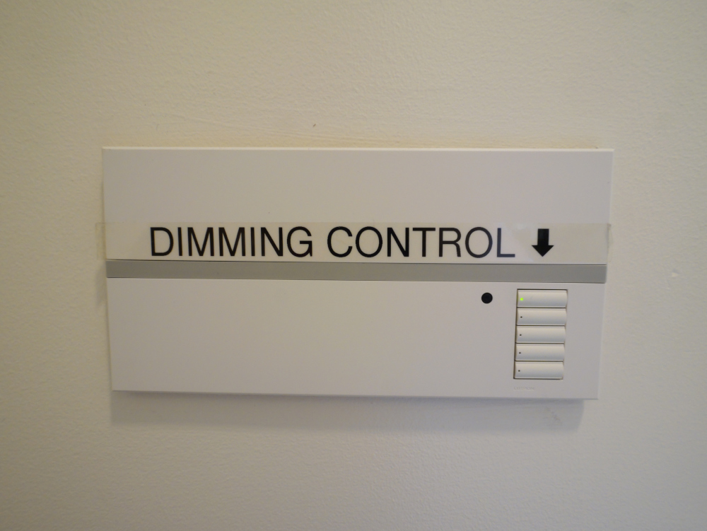
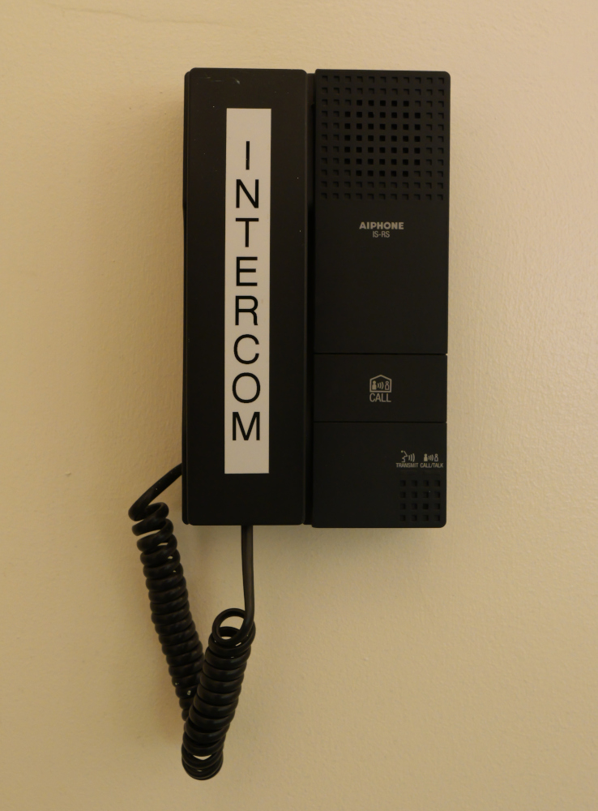

<head>
    <!-- for optimal display on high DPI devices -->
    <meta name="viewport" content="width=device-width, initial-scale=1.0" />
    <link rel="stylesheet" href="https://cdn.jsdelivr.net/npm/@photo-sphere-viewer/markers-plugin/index.min.css" />
    <link rel="stylesheet" href="https://cdn.jsdelivr.net/npm/@photo-sphere-viewer/core/index.min.css" />
	<style>
a:link {
  color: white;
  background-color: transparent;
  text-decoration: none;
}

a:visited {
  color: gray;
  background-color: transparent;
  text-decoration: none;
}

a:hover {
  color: red;
  background-color: transparent;
  text-decoration: underline;
}

a:active {
  color: yellow;
  background-color: transparent;
  text-decoration: underline;
}
html, body, #viewer {
  width: 100%;
  height: 100%;
  margin: 0;
  font-family: sans-serif;
}
	.custom-tooltip {
    max-width: none;
    width: 300px;
    box-shadow: 0 0 0 3px white;
}

.custom-tooltip .psv-tooltip-content {
    padding: 0;
}

.custom-tooltip img {
    width: 100%;
    border-radius: 4px 4px 0 0;
}

.custom-tooltip h2,
.custom-tooltip p {
    margin: 1rem;
    text-align: justify;
}
</style>
</head>

<!-- the viewer container must have a defined size -->
<div id="viewer" style="width: 99vw; height: 98vh;"></div>

<script type="importmap">
    {
        "imports": {
            "three": "https://cdn.jsdelivr.net/npm/three/build/three.module.js",
            "@photo-sphere-viewer/core": "https://cdn.jsdelivr.net/npm/@photo-sphere-viewer/core/index.module.js",
            "@photo-sphere-viewer/markers-plugin": "https://cdn.jsdelivr.net/npm/@photo-sphere-viewer/markers-plugin/index.module.js"
        }
    }
</script>

<script type="module">
    import { Viewer } from '@photo-sphere-viewer/core';
    import { MarkersPlugin } from '@photo-sphere-viewer/markers-plugin';
    const viewer = new Viewer({

        plugins: [
        [MarkersPlugin, {
		"defaultHoverScale": true,
            markers: [
                {
    "id": "marker-lectern",
    "image": 'shield.png',
    "position": {
      "yaw": 1.397,
      "pitch": -0.124
    },
    "size": {
      "width": 32,
      "height": 32
    },
    "anchor": "bottom center",
    "tooltip": {
      "content": document.querySelector('#tooltip-content').innerText,
	  "className": 'custom-tooltip',
      "position": "top center",
      "trigger": "click"
    }
},
	  {
    "id": "marker-lights",
    "image": 'shield.png',
    "position": {
      "yaw": 1.819,
      "pitch": -0.105
    },
    "size": {
      "width": 32,
      "height": 32
    },
    "anchor": "bottom center",
	"tooltip": {
      "content": document.querySelector('#tooltip-lights').innerText,
	  "className": 'custom-tooltip',
      "position": "top center",
      "trigger": "click"
    }
  },
  {
    "id": "marker-supplies",
    "image": 'shield.png',
    "position": {
      "yaw": 4.38,
      "pitch": -0.037
    },
    "size": {
      "width": 32,
      "height": 32
    },
    "anchor": "bottom center",
    "tooltip": {
      "content": document.querySelector('#tooltip-supplies').innerText,
	  "className": 'custom-tooltip',
      "position": "top center",
      "trigger": "click"
    }
},
{
    "id": "intercom",
    "image": 'shield.png',
    "position": {
      "yaw": 1.787,
      "pitch": -0.114
    },
    "size": {
      "width": 32,
      "height": 32
    },
    "anchor": "bottom center",
    "tooltip": {
      "content": document.querySelector('#tooltip-intercom').innerText,
	  "className": 'custom-tooltip',
      "position": "top center",
      "trigger": "click"
    }
},
  
            ],
        }],
    ],
        container: document.querySelector('#viewer'),
        panorama: 'Frey313-Front.jpg',
		caption: '<b> Frey Single Projector Large Classroom:</b> Frey 313 ',
		description: document.querySelector('#description').innerHTML,
			sphereCorrection: { pan:0, tilt:0, roll: -0.025 },
		navbar: [
		'zoom', 
		'move', 
		'markers', 
		'caption',
		'description',
		],
    });
	const markersPlugin = viewer.getPlugin(MarkersPlugin);
	viewer.addEventListener('ready', () => {
    viewer
        .animate({
            yaw: 1.45,
            pitch: 0.2,
            speed: 2500,
        })
        .then(() => {
            markersPlugin.showMarkerTooltip('marker-lectern');
        });
}, { once: true });
	</script>

<script type="text/template" id="description">
    <p>This Frey Large classroom is equiped with one projector and seats aproximately 52 people. <br> For more information on what equipment is in each room in Frey Hall, please refer to our Guide on Equipment Installed in Classrooms: <a href="https://stonybrook365-my.sharepoint.com/:x:/g/personal/jarrod_mcfarlane_stonybrook_edu/EchVh7xGX15LjfwCvgN2hD4Ba0aHUglplvKi62KVLelalA?e=4%3AdjeDP6&fromShare=true&at=9">https://stonybrook365-my.sharepoint.com/:x:/g/personal/jarrod_mcfarlane_stonybrook_edu/EchVh7xGX15LjfwCvgN2hD4Ba0aHUglplvKi62KVLelalA?e=4%3AdjeDP6&fromShare=true&at=9</a> <br> <br>
	For more information on how to operate Frey Far Beyond Style Lecterns, please see our Far Beyond Style Knowlage Base Article: <a href="https://it.stonybrook.edu/help/kb/far-beyond-style">https://it.stonybrook.edu/help/kb/far-beyond-style</a></p>
</script>

<script type="text/template" id="tooltip-content">
        <article>
		 
      <h2>Frey Far Beyond Style Lectern</h2>
      <p>
        For more information on how to operate Frey Far Beyond Style Lecterns, please Click on the "<em><strong>i</strong></em>" on the right hand side of the bottom bar.</a>
      </p>
    </article>
</script>	

<script type="text/template" id="tooltip-lights">
        <article>
		 
      <h2>Lighting Controll</h2>
      <p>
        The  Five button Lighting Controll allows you to control the lights. <br>
		The buttons are as follows:
		<ul>
  <li>Button one: Full On</li>
  <li>Button two: Dim screen</li>
  <li>Button three: Dim audience</li>
  <li>Button four: Light front</li>
  <li>Button five: Full Off</li>
</ul>
<br>
All of the above lighting controll is mirrored on the touch panel in the lectern.
<br>
<br>
The Two Button Lighting Controll (not pictured) allows for Full on and Full off Control of the classroom lights.
		</a>
      </p>
    </article>
</script>	

<script type="text/template" id="tooltip-supplies">
        <article>
		 
      <h2>Supply Box</h2>
      <p>The Supply Box holds additional consumable supplies such as Markers and Erasers.
	  <br>
	  On top of the Supply Box is white board cleaning spray, and tri-fold towels for a deeper clean.</p>
    </article>
</script>	

<script type="text/template" id="tooltip-intercom">
        <article>
		 
      <h2>Intercom</h2>
      <p>The Intercom will call the Classroom Support office in Frey Hall, who can assist you if needed.</p>
    </article>
</script>	